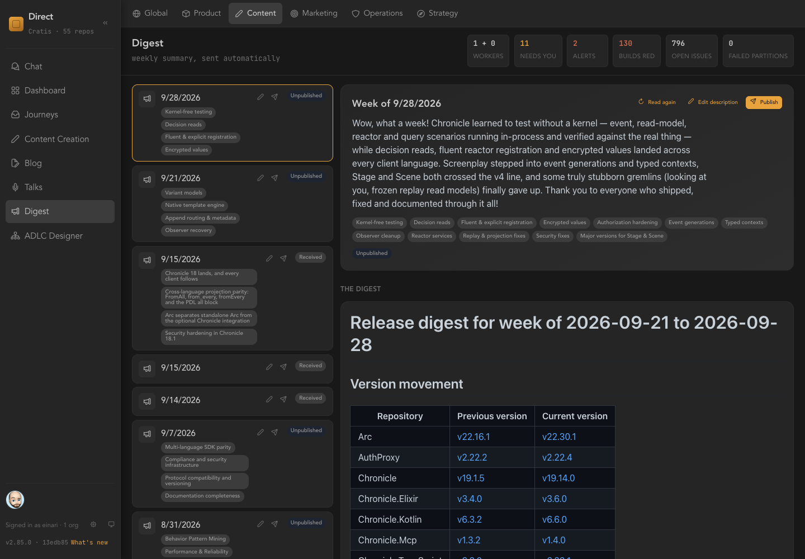

04 · Publish — content for every outlet
What shipped is only half the story.
Releases pile up faster than anyone writes about them. Direct treats a blog post like an issue: it has a brief, a draft, an editorial gate and a publication that gets verified. The weekly digest is assembled from what your repositories actually released.

The weekly digest. Themes extracted from the week's releases, a generated description in your voice, and the version movement for every repository. Publish is a button a person presses.
A journey for words, with gates.
01Brief
02Draft
03Editorial
04Publish
- Brief readiness. A post needs a title and an objective before an agent drafts anything.
- Draft quality and editorial approval. Same gate machinery as code, with its own rules and its own scope in the designer.
- Publication verification. Publishing isn't finished until the publication is observed. A taken-down post raises drift.
- A writer agent, in a worker. Drafts come from the content repository or from the issue that motivated them.
In product
Weekly digest
Collected from releases, analysed for themes, reviewed, published.
In product
Blog
Brief to verified publication with editorial gates.
In product · early
Talks & LinkedIn
Talk material and discovered posts with a suggested comment for each.
Direction
More outlets
Newsletter, release notes, docs and social channels as targets for the same content.